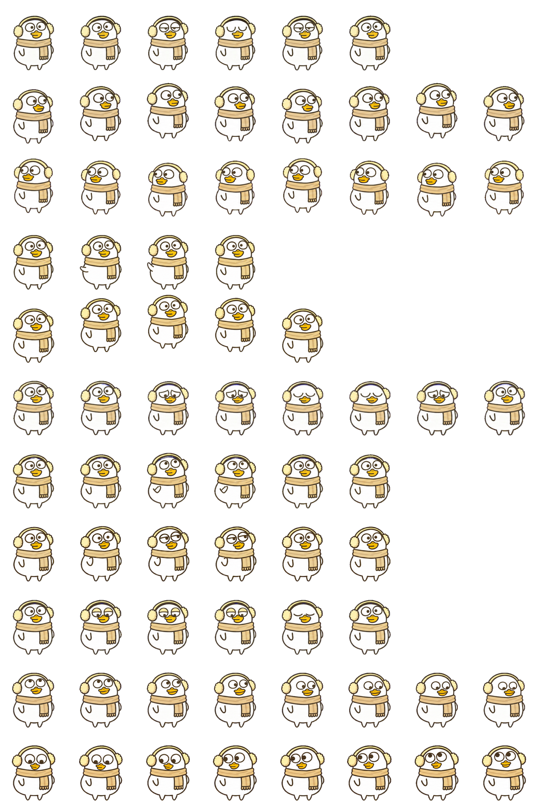

<!doctype html>
<html lang="zh-CN">
<meta charset="utf-8">
<meta name="viewport" content="width=device-width,initial-scale=1">
<title>Duckyo Scarf Codex pet · 动作预览</title>
<style>
  :root { color-scheme: light; font-family: -apple-system, BlinkMacSystemFont, "PingFang SC", sans-serif; color: #514b40; background: #f6f4ef; }
  * { box-sizing: border-box; }
  body { margin: 0; padding: 32px 20px; }
  main { max-width: 700px; margin: auto; }
  h1 { margin: 0 0 8px; font-size: 24px; font-weight: 600; }
  p { margin: 8px 0; line-height: 1.6; }
  .subtle { color: #80796f; font-size: 14px; }
  .stage { display: grid; place-items: center; min-height: 280px; margin: 24px 0 16px; border: 1px solid #ddd9cf; border-radius: 20px; background: #eeebe3; }
  .stage.dark { background: #242424; border-color: #444; }
  canvas { display: block; width: 192px; height: 208px; }
  .buttons, .controls { display: flex; flex-wrap: wrap; gap: 8px; margin: 14px 0; }
  button { min-height: 42px; padding: 8px 13px; border: 1px solid #d9d3c7; border-radius: 10px; background: #fffdfa; color: inherit; font: inherit; cursor: pointer; }
  button[aria-pressed="true"] { background: #e7d29d; border-color: #bda66d; color: #3d3523; }
  button:disabled { opacity: .45; cursor: default; }
  button:focus-visible { outline: 3px solid #8b6f39; outline-offset: 2px; }
  label { display: flex; align-items: center; gap: 7px; padding: 8px 4px; font-size: 14px; }
  input { accent-color: #8b6f39; }
  #status { min-height: 24px; font-variant-numeric: tabular-nums; font-size: 14px; }
  #error { color: #9b382d; }
</style>
<main>
  <h1>Duckyo Scarf Codex pet · 动作预览</h1>
  <p class="subtle">点选动作，看看小鸭的表现。</p>
  <div class="stage" id="stage">
    <canvas id="pet" width="192" height="208" role="img" aria-label="Duckyo Scarf Codex pet动画预览"></canvas>
  </div>
  <div id="status" aria-live="off">正在载入精灵图…</div>
  <div class="buttons" id="states" role="group" aria-label="选择动作"></div>
  <div class="controls">
    <button id="pause" disabled>暂停</button>
    <button id="next" disabled>下一帧</button>
    <label><input type="checkbox" id="dark">深色背景</label>
  </div>
  <p class="subtle">可暂停并逐帧查看，也可切换深色背景检查边缘。</p>
  <p id="error" role="alert"></p>
  
</main>
<script>
(() => {
  "use strict";
  const W = 192, H = 208;
  const canvas = document.getElementById("pet");
  const ctx = canvas.getContext("2d");
  const atlas = document.getElementById("atlas");
  const status = document.getElementById("status");
  const pauseButton = document.getElementById("pause");
  const nextButton = document.getElementById("next");
  const row = (index, durations) => durations.map((ms, col) => ({ row: index, col, ms }));
  const idle = row(0, [280, 110, 110, 140, 140, 320]);
  const jump = row(4, [140, 140, 140, 140, 280]);
  const directions = ["上", "上偏右", "右上", "右偏上", "右", "右偏下", "右下", "下偏右",
                      "下", "下偏左", "左下", "左偏下", "左", "左偏上", "左上", "上偏左"];
  const animations = [
    { id: "idle", label: "待机", frames: idle },
    { id: "running-right", label: "向右移动", frames: row(1, [120,120,120,120,120,120,120,220]) },
    { id: "running-left", label: "向左移动", frames: row(2, [120,120,120,120,120,120,120,220]) },
    { id: "waving", label: "打招呼", frames: row(3, [140,140,140,280]) },
    { id: "jumping", label: "跳跃", frames: jump },
    { id: "failed", label: "遇到困难", frames: row(5, [140,140,140,140,140,140,140,240]) },
    { id: "waiting", label: "等待回应", frames: row(6, [150,150,150,150,150,260]) },
    { id: "running", label: "专注工作", frames: row(7, [120,120,120,120,120,220]) },
    { id: "review", label: "检查结果", frames: row(8, [150,150,150,150,150,280]) },
    { id: "look", label: "顺时针环视", frames: Array.from({length: 16}, (_, i) => ({
      row: 9 + Math.floor(i / 8), col: i % 8, ms: 160, direction: directions[i]
    })) },
    { id: "idle-jump-idle", label: "待机 → 跳跃 → 待机", frames: [
      ...idle.map(f => ({...f, phase: "待机"})),
      ...jump.map(f => ({...f, phase: "跳跃"})),
      ...idle.map(f => ({...f, phase: "待机"}))
    ] }
  ];
  let active = animations[0], frameIndex = 0, loaded = false, playing = true;
  let lastTime = null, elapsed = 0;
  const buttons = [];

  function draw() {
    if (!loaded) return;
    const f = active.frames[frameIndex];
    ctx.clearRect(0, 0, W, H);
    // Exact native cell copy: no scaling, warping, rotation or new artwork.
    ctx.drawImage(atlas, f.col * W, f.row * H, W, H, 0, 0, W, H);
    const extra = f.direction || f.phase || "";
    status.textContent = `${active.label} · ${frameIndex + 1}/${active.frames.length} 帧` +
      (extra ? ` · ${extra}` : "");
    canvas.setAttribute("aria-label", `${active.label}，第 ${frameIndex + 1} 帧${extra ? "，" + extra : ""}`);
  }

  function setAnimation(animation) {
    active = animation;
    frameIndex = 0;
    elapsed = 0;
    lastTime = null;
    buttons.forEach(({button, animation: item}) => button.setAttribute("aria-pressed", String(item === active)));
    draw();
  }

  for (const animation of animations) {
    const button = document.createElement("button");
    button.type = "button";
    button.textContent = animation.label;
    button.dataset.state = animation.id;
    button.disabled = true;
    button.setAttribute("aria-pressed", String(animation === active));
    button.addEventListener("click", () => setAnimation(animation));
    document.getElementById("states").append(button);
    buttons.push({button, animation});
  }

  pauseButton.addEventListener("click", () => {
    playing = !playing;
    lastTime = null;
    pauseButton.textContent = playing ? "暂停" : "播放";
  });
  nextButton.addEventListener("click", () => {
    playing = false;
    pauseButton.textContent = "播放";
    frameIndex = (frameIndex + 1) % active.frames.length;
    elapsed = 0;
    lastTime = null;
    draw();
  });
  document.getElementById("dark").addEventListener("change", event => {
    document.getElementById("stage").classList.toggle("dark", event.target.checked);
  });
  document.addEventListener("visibilitychange", () => { lastTime = null; });

  function tick(time) {
    if (loaded && playing && !document.hidden) {
      if (lastTime !== null) {
        elapsed += Math.min(time - lastTime, 250);
        while (elapsed >= active.frames[frameIndex].ms) {
          elapsed -= active.frames[frameIndex].ms;
          frameIndex = (frameIndex + 1) % active.frames.length;
          draw();
        }
      }
      lastTime = time;
    } else {
      lastTime = null;
    }
    requestAnimationFrame(tick);
  }

  function loadAtlas() {
    if (loaded) return;
    if (atlas.naturalWidth !== 1536 || atlas.naturalHeight !== 2288) {
      document.getElementById("error").textContent =
        `精灵图尺寸不符：${atlas.naturalWidth} × ${atlas.naturalHeight}，应为 1536 × 2288。`;
      status.textContent = "无法播放";
      return;
    }
    loaded = true;
    buttons.forEach(({button}) => { button.disabled = false; });
    pauseButton.disabled = false;
    nextButton.disabled = false;
    draw();
  }
  atlas.addEventListener("load", loadAtlas);
  atlas.addEventListener("error", () => {
    status.textContent = "无法载入精灵图";
    document.getElementById("error").textContent = "请保留整个目录结构，确认 ../pet/spritesheet.webp 文件存在。";
  });
  if (atlas.complete && atlas.naturalWidth) loadAtlas();
  requestAnimationFrame(tick);
})();
</script>
</html>
